This is the companion deck to Are You a Christian? — that post asks the question; this one takes apart the word the answer hangs on.
In my last post I said that the whole gospel hangs on what “believe in” actually means — and that our English word has been watered down until it can mean little more than “I agree this is probably true.” I built this slide deck to show the architecture underneath the word: the Greek (pistis), the Hebrew anchor (emunah — the slides spell it Amuna, same word, and I wrote a whole post on it: Faith Is a Load-Bearing Word), and then the case studies — Abraham leaving without a map, the Israelites refusing to act on a mountain of evidence, the Hall of Action in Hebrews 11, a bleeding woman, a centurion, Peter out of the boat, Thomas and his higher calling, and finally the Pioneer Himself. Walk the slides in order; the argument builds.
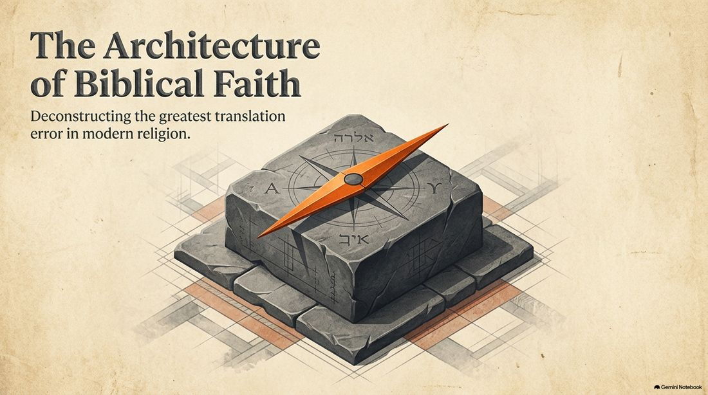
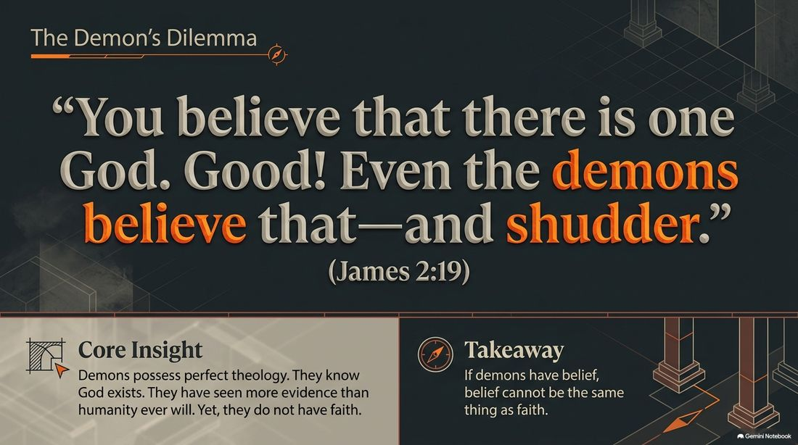
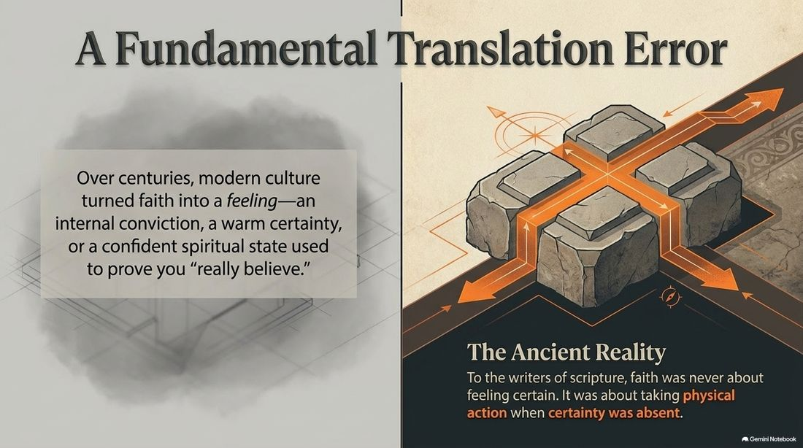
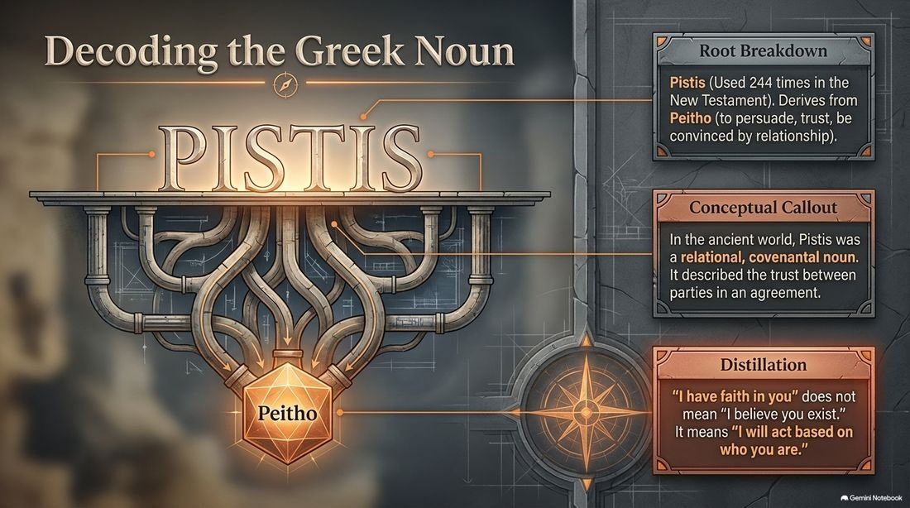
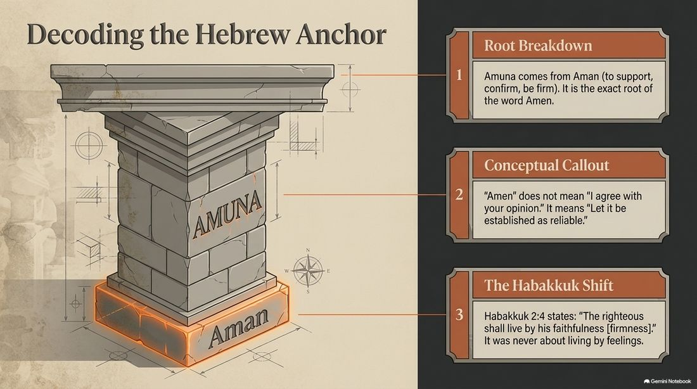
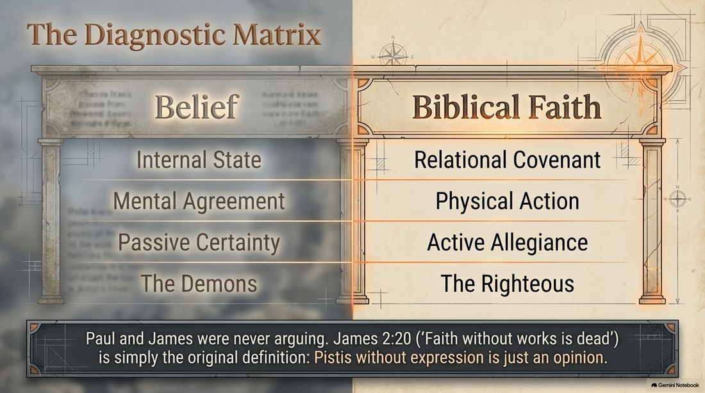
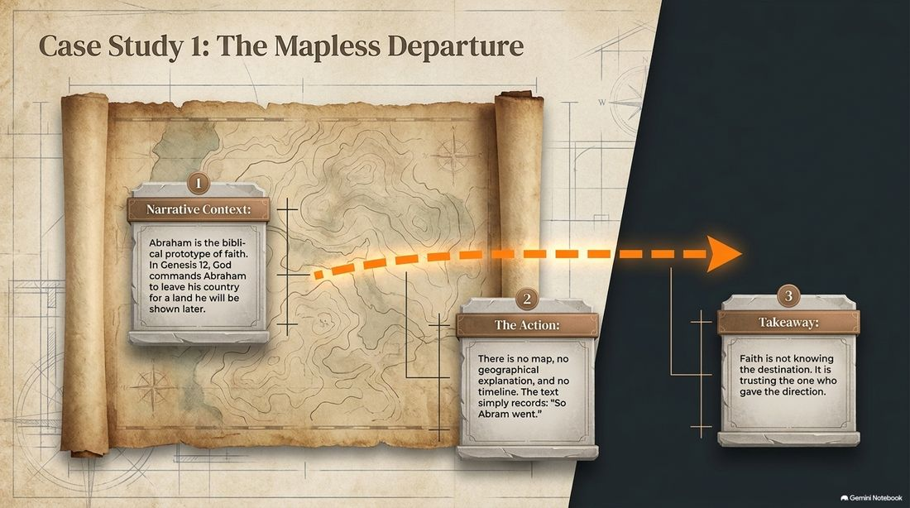
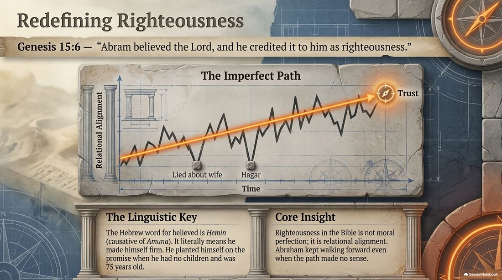
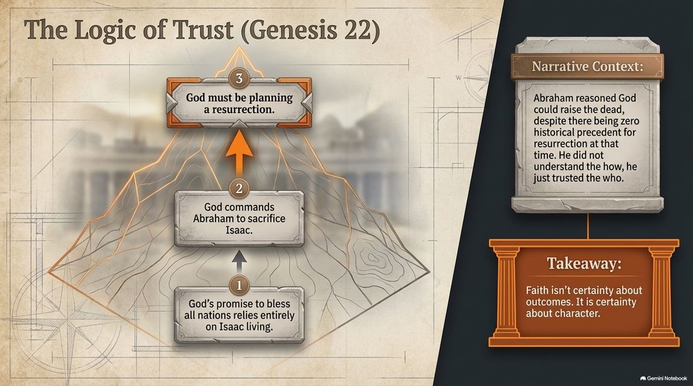
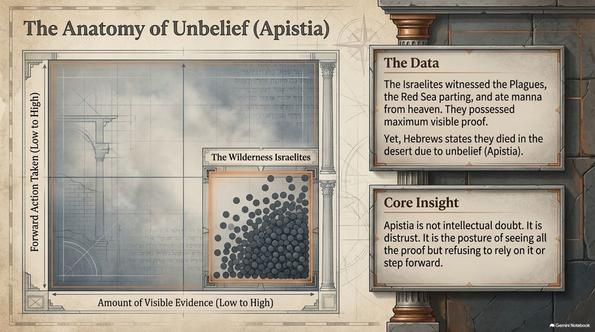
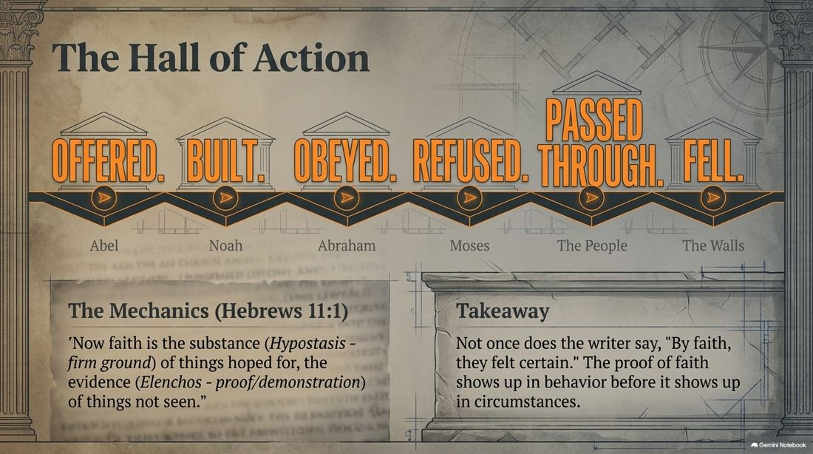
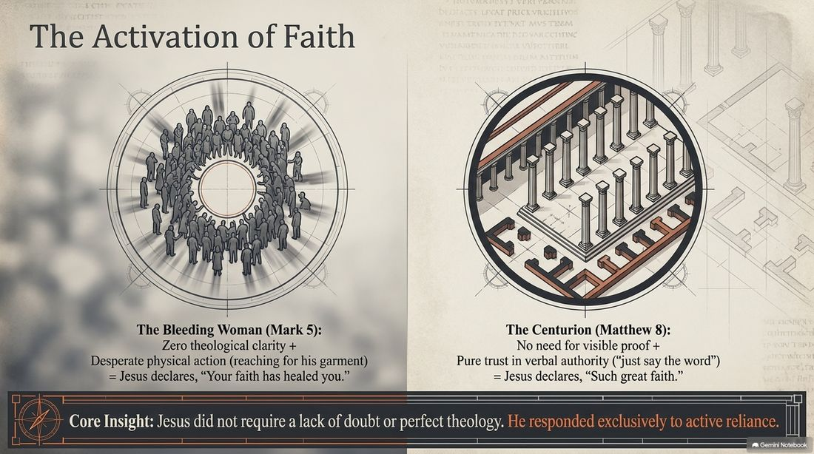
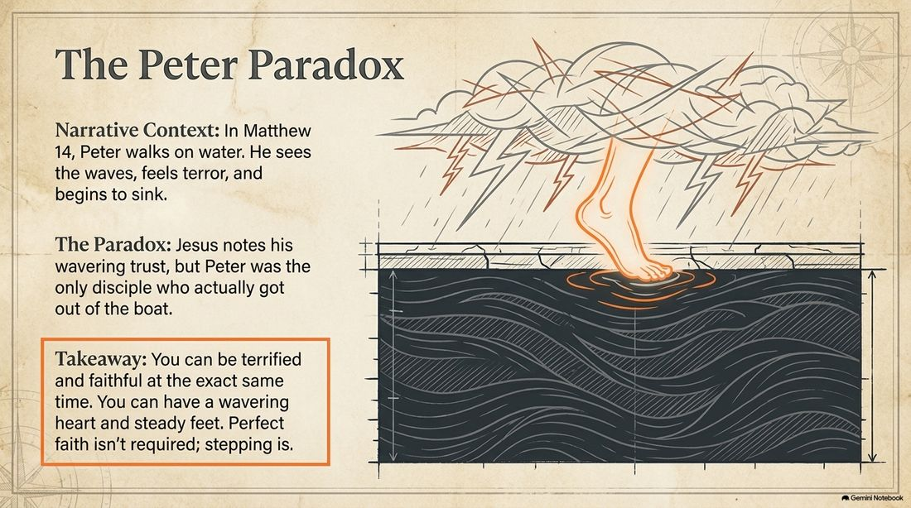
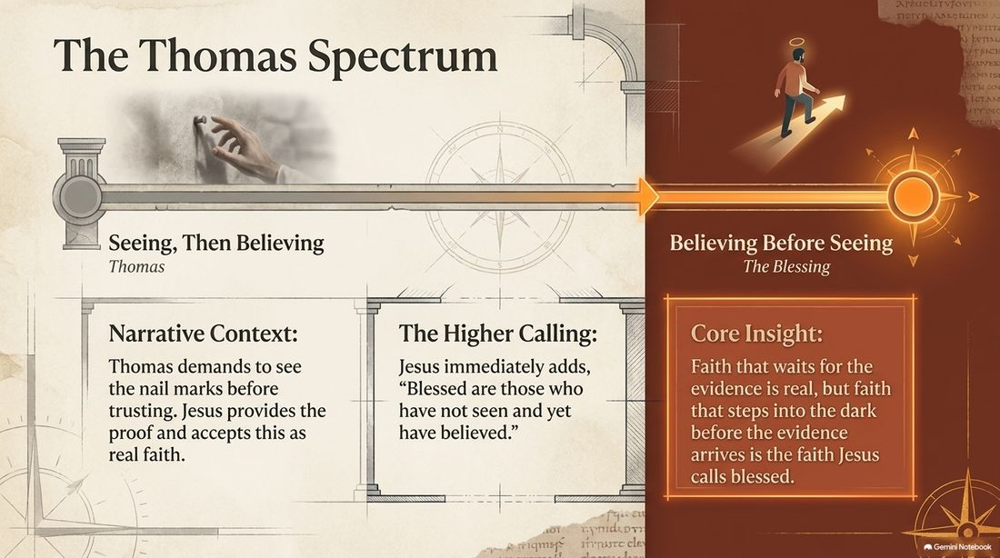
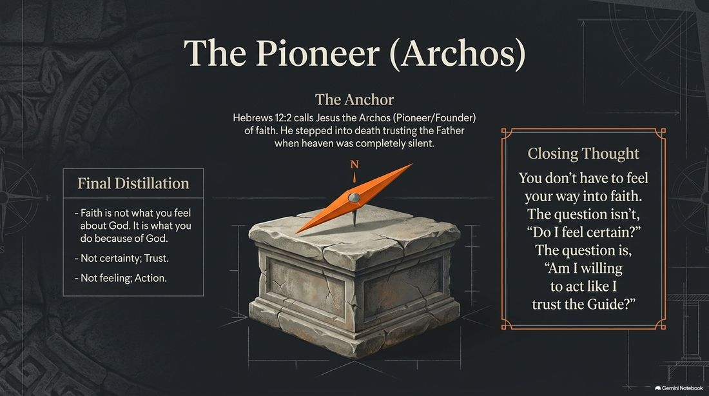
Where does that leave us? Right back at the question of the last post: not “do you agree Jesus existed?” — even the demons clear that bar — but “have you staked yourself on Him the way Abraham staked everything on the Promise?” That is pistis. That is emunah. That is believing IN. — Erv
Comments